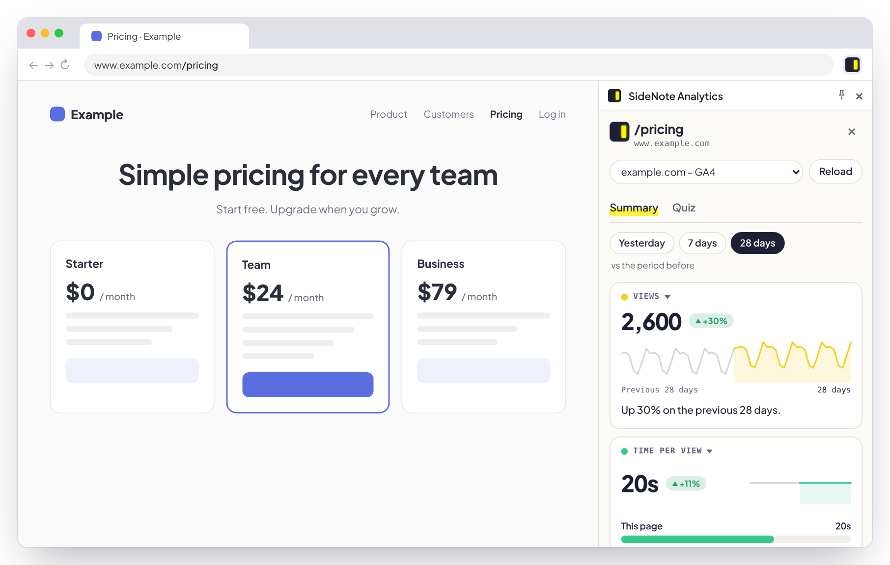

Google Analytics 4, in Chrome's side panel
Your page. Your data. Side by side.
SideNote Analytics brings the page's GA4 data into view—sessions, users, traffic sources and more, compared with the previous period. All beside the page you're already on.
Free. Read-only. No servers or tracking.

Quiz · Know your page?
How well do you know your own numbers?
Do most visitors use mobile or desktop? Is traffic up or down? Does organic search bring more visitors than direct?
Test your instincts with five questions based on your page's actual data. Each answer comes with a chart, so you can see how your guess compares.
Beat your previous score or challenge a teammate. The shared message never includes your site's name.

How it works
Connect once. Explore as you browse.
Once SideNote is available, getting started takes three steps.
- 1Add it to Chrome.
Install SideNote Analytics from the Chrome Web Store and pin it to your toolbar.
- 2Connect Google Analytics.
Sign in with the Google account you use for GA4. Access is read-only, and you can revoke it at any time.
- 3Open a page on your site.
Click the SideNote icon. It finds the matching GA4 property and displays that page's data in the side panel.
Your choice of metrics
Four metrics. Whatever matters to you.
Choose the four metrics you want to see. Check how each one has changed directly in the selection menu, then add it to your panel. Your selection stays with you as you move between pages.
- TrafficViews, users, sessions, new users
- EngagementTime per view, engagement rate, bounce rate, views per visit
- Traffic sourcesChannels, referring sites, organic search
- VisitorsDevices, countries, new vs. returning
- Page performanceKey events, key events per 1,000 views

Daily detail
Point at Tuesday. See Tuesday.
Hover over the chart to see a single day's value. Move your pointer away to return to the summary for the selected period.

Privacy
Your data. A direct connection to Google.
SideNote runs in your browser and connects directly to Google. Your Analytics data is never sent to SideNote or any third party.
Data goes directly from Google to your browser.
The extension has no ads, usage analytics or tracking code.
SideNote can read your Analytics reports. It cannot change or delete anything in your Analytics account.
Questions
Before you connect
Can SideNote access my Analytics data?
The extension needs read-only access to display your reports. That access is used only within your browser. No Analytics data is sent to any external server.
Why does Google ask for permission to see my Analytics data?
This permission allows SideNote to retrieve and display your reports. It does not allow changes to your Analytics account or data. You can revoke access at any time in your Google Account settings.
Which websites does it work with?
SideNote works with sites tracked by a GA4 property your Google account can access. If no matching property is found, the panel lets you know.
What if my site has multiple GA4 properties or subdomains?
SideNote finds a matching property automatically. If the match is unclear, it prompts you to choose from the available properties.
Why is it free?
SideNote Analytics runs entirely in your browser, with no servers or infrastructure behind it. That keeps it free to use, with no paid plans, trials or ads.